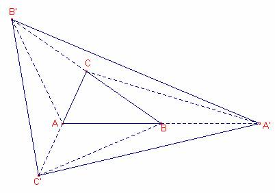

Problema 307
2.- Alrededor de un
triángulo.
Sea ABC un triángulo.
1º) Construye el punto A'
simétrico de A en relación a B; el punto B' simétrico de B en relación a C, y
el punto C' simétrico de C en relación a A.
2º) Compara las áreas de
los triángulos ABC y A'B'C'
Clapponi, P. (1995): Activité
.. autour d'un triangle. Petit X 40, pag. 86. [Clapponi es un
seudónimo de Philippe Clarou
- Bernard Capponi].
Solución:
1r
Para
construir el punto simétrico de A respecto de B:
a) Dibujar
la recta que pasa por A, B.
b) Dibujar
la circunferencia de centro B que pasa por A.
c) La
intersección (distinta de A) de la recta y la circunferencia es el punto A’ simétrico
de A respecto de B.
Los puntos
B’ y C’ es construyen de forma análoga.
2n

Sea S el
área del triángulo  .
.
Los triángulos
 ,
,  tienen la misma base
tienen la misma base  y la misma altura.
y la misma altura.
Entonces,
el área de  es S.
es S.
Los triángulos
 ,
,  tienen la misma base
tienen la misma base  y la misma altura.
y la misma altura.
Entonces,
el área de  es S.
es S.
Los triángulos
 , tienen la misma base
, tienen la misma base  y la misma altura.
y la misma altura.
Entonces,
el área de es S.
Los triángulos
,  tienen la misma base
tienen la misma base  y la misma altura.
y la misma altura.
Entonces,
el área de  es S.
es S.
Los triángulos
 , tienen la misma base
, tienen la misma base  y la misma altura.
y la misma altura.
Entonces,
el área de es S.
Los triángulos
, tienen la misma base  y la misma altura.
y la misma altura.
Entonces,
el área de es S.
El área
del triángulo es la suma de los triángulos
 ,
, 
 , ,
, ,  , , que todos tienen la misma área.
, , que todos tienen la misma área.
Entonces
el área del triángulo es 7S.
El cociente
de las áreas de los triángulos y  es 7.
es 7.